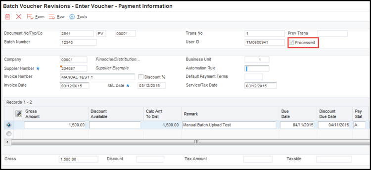
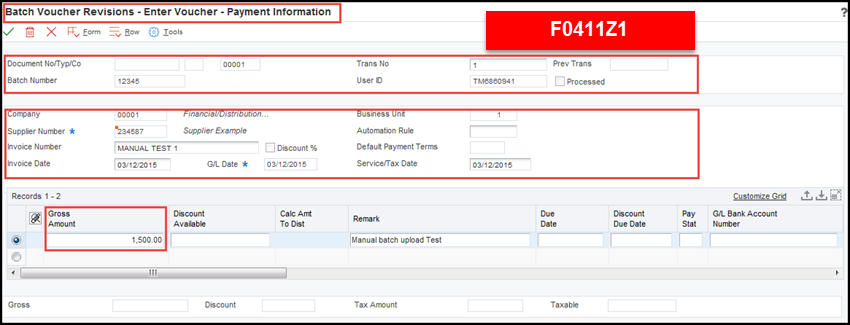

| Purpose |
| Troubleshooting Steps |
| Errors in Processing |
| Troubleshooting Recommendations |
| Manual Testing Steps |
| Common Errors |
| Error ID: 0809 "Document Type Invalid" |
| Error Message: "Fetch from table F0911Z1T failed" |
| Error ID 0082 or 1912: "Duplicate Supplier/Invoice Number" |
| Error ID "The record being added already exists in cache I09UI003" |
| General Troubleshooting Questions |
| Question 1: What issue can occur if the F0411Z1 and F0911Z1 records do not correspond? |
| Question 2: After running the Batch Voucher Processing Report (R04110ZA), why is the Document Company field not the same as the value written in the F0411Z1 table? |
This document provides troubleshooting suggestions regarding Voucher Batch Processing within EnterpriseOne.
If any errors occur during processing, they are noted on the edit report. You can correct the errors and reprocess the batch. An error on one transaction does not stop the batch from processing. If a transaction in the batch is in error, that transaction is not processed with the rest of the batch. After the batch has been successfully processed, the field VLEDSP is updated from a value of 0 to 1. Successfully processed records remain in the Voucher Transactions - Batch Upload (F0411Z1) and Journal Entry Transactions - Batch File (F0911Z1) tables until they are purged.



If successful, you can use the F0411Z1 and F0911Z1 tables as a mapping guide for your custom upload program data. Such as Compare F0411Z1 test record to your production F0411Z1 for alignment issues, fields populated versus not populated (i.e. required versus optional), compare F0911Z1 test record to your production F0911Z1 for alignment issues, fields populated versus not populated (i.e. required versus optional), check for NULL values versus Blank value.
Scenario: What causes the Batch Voucher Processor Report (R04110ZA) to trigger error "Document type for a manual check entry must be PM" when processing voucher information without payment details?
CAUSE . . . . Document type for a manual check entry must be 'PM'.
RESOLUTION. . Enter a valid document type.
Solution: This error may be caused by incorrect settings in the Batch Voucher Revisions application (P0411Z1) Processing Options. When Processing Option 1: Manual Check on the Manual Checks tab is set to '1', the system attempts to create a voucher in a 'W' type batch (Manual Payment without Voucher Match) and requires a payment number to be stored in the Matching Document field (data dictionary item DOCM) in the Voucher Transactions Batch Upload table (F0411Z1). If this field is blank, the system triggers an error. To correct this issue, follow the steps below:
Scenario: Why does the Batch Voucher Processing Report (R04110ZA) run successfully, but send a "Fetch from table F0911Z1T failed" error message to the Work Center (P012503)?
Solution: This error in the Work Center is caused by Cost Management being enabled in the Cost Management Constants (P1609). For more information, refer to How To Set Up and Map Data For Voucher Batch Processing In EnterpriseOne (P0411Z1/R04110ZA) [Video]"
Scenario: Why does the Batch Voucher Processing Report (R04110ZA) return the error message "Duplicate Supplier/Invoice Number"?
Solution: This Issue is caused by the setup in the Accounts Payable Constants (P0000). If the Duplicate Invoice Number Edit (data dictionary item DUIN) option is set to 'H', the system triggers this error when creating a voucher with a duplicate invoice number. To correct this error, either change the invoice number (data dictionary item VINV) to a unique value or alter the Duplicate Invoice Number Edit option.
Scenario: Why does the Batch Voucher Processing Report (R04110ZA) return the error message " The Record being added already exists in cache 109U1003".
Solution: This issue can be caused if the system detects a duplicate record in one the files being processed. In this case, the logs described that one record inserted into the cache correctly (for an amount, on one of the F0911Z1 lines), and then the error is thrown when it tries to insert the other line into the cache. To correct this error, change one of the JELN lines (not the EDLN) to 2.0.
Answer 1: Because the programs perform data selection and sequencing of the transactions before the first record is read for processing, the following situations could occur that will result in errors:
Answer 2: It is possible that the original value in the Voucher Transactions Batch Upload table (F0411Z1) and Journal Entry Transactions Batch File table (F0911Z1) does not exist in the Company Constants table (F0010). Another possibility is that the Document Company (data dictionary item KCO) was not populated in the Journal Entry Transactions Batch File table (F0911Z1). When specifying this information in the batch voucher process, ensure both worktables contain the same value for associated records.